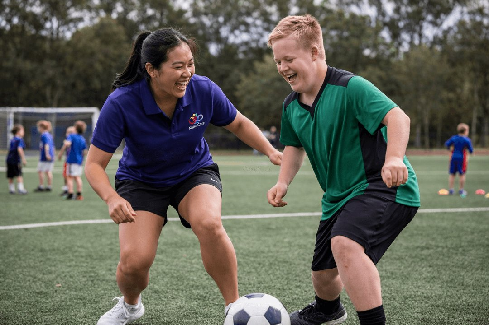
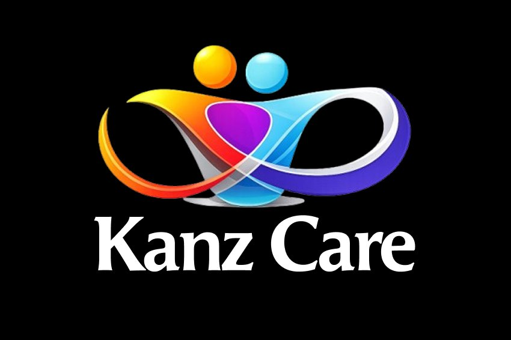
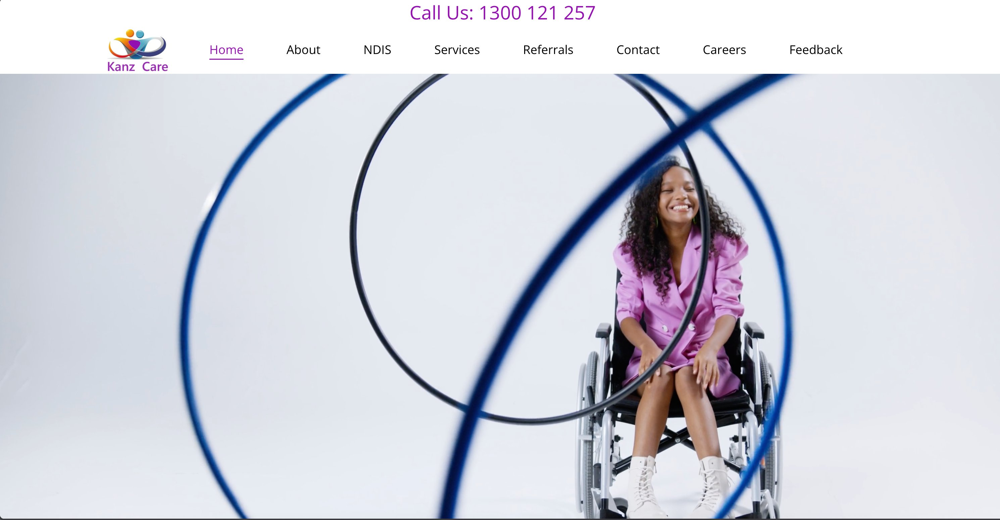
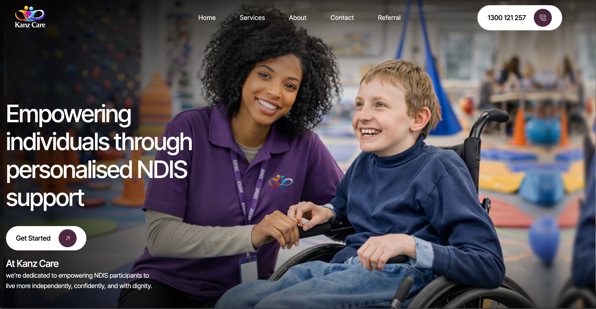
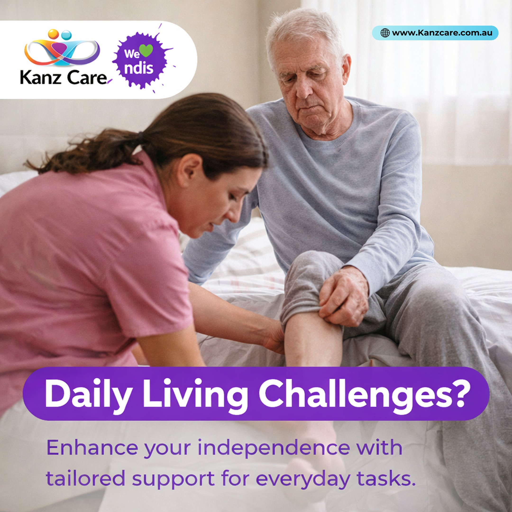
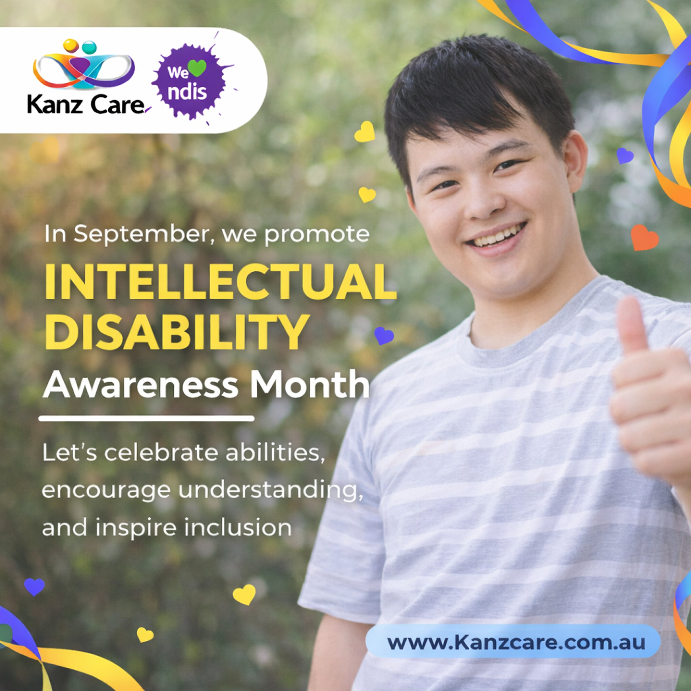
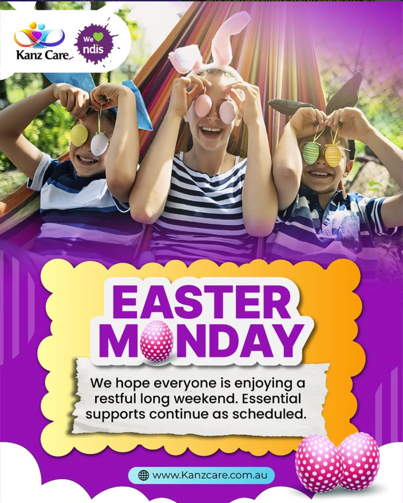
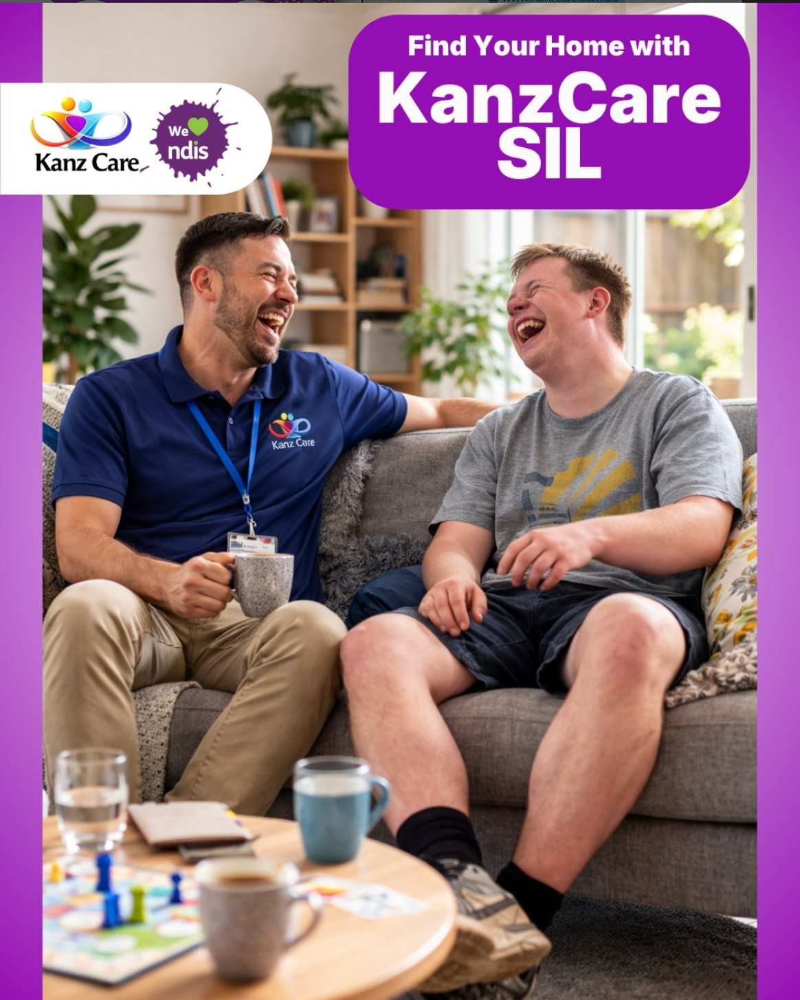
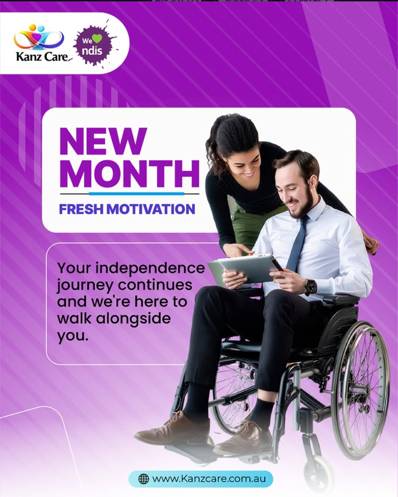
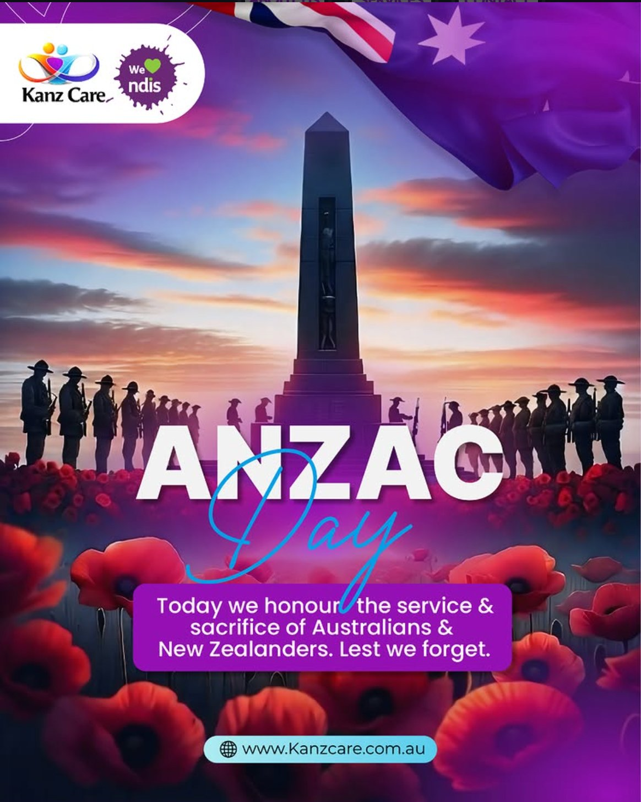

Kanz Care is a registered NDIS support services provider in Melbourne — personal care, community participation, life-skill development, household tasks, accommodation and tenancy support. Strong service offering, no online presence to match. The work was to give them one: refine the brand, design and build the website, and design a social media system that runs predictably across a full year of holidays and awareness moments.

01 — Discover
The first conversations were with the Kanz Care team — what they do day-to-day, who their participants are, where referrals come from, and how a participant or family typically finds them in the first place. The pattern that emerged was clear: trust was being built one phone call at a time, and the digital surface that should have done that work at scale didn’t exist yet.
Discovery was conversational, not formal. Working sessions with the founders to understand the business: which services participants ask for first, where the team feels confident, where they don’t. What language participants and coordinators actually use when they call. Which awareness months and community events the brand should show up for, and which ones would feel forced.
The output was a shared understanding rather than a deck — the people running the business and the person designing for it agreed on what mattered, and in what order.
An NDIS provider competes on trust. Participants and families compare options before they pick up the phone — they look for a website, they check social, they read the room. Kanz Care had the operational quality, but nothing online for someone in that compare-and-decide moment to look at.
Three deliverables emerged from discovery: a refined visual identity that reads as trustworthy at a glance, a website that converts that first visit into a referral, and a social presence that keeps the brand visible between visits.
02 — Define
An NDIS provider’s online presence doesn’t serve one audience. It serves at least three, often together — and most of them arrive from a phone in the middle of doing something else. Define-stage work was naming the audiences clearly and writing a single brand promise the website and social could both deliver on.
People comparing providers, often after a difficult experience with a previous one. Looking for two things: does this place actually deliver the kind of support I need, and are they easy to reach? Mobile-first, scanning fast, low patience for jargon.
Professionals making referrals on behalf of a participant. Need clarity on services, regions covered, and a clean referral path. Different reading speed, same need for trust signals.
Brand promise
Personalised NDIS support, delivered with dignity. The phrase isn’t marketing copy — it’s the through-line for every design decision that follows. Visual system, web architecture, social tone: each one had to read as personalised and as dignified, never as one without the other.
03 — Design · Brand
Kanz Care had a brand. A logo, a colour direction, an instinct for the kind of provider they wanted to be. The work wasn’t to start over — it was to refine what was there into a visual system that holds up across surfaces, scales to a year of social content, and reads consistently to a participant scrolling on a phone or a coordinator reviewing on a desktop.
The existing logo — a colourful infinity loop with two figures on top — was the right idea executed against a heavy black background, paired with a serif wordmark that didn’t agree with the playfulness of the mark. The brand DNA was good; the presentation needed to catch up.
Vector cleaned up, edges retraced for crisp scaling at small sizes, the wordmark moved to a contemporary sans-serif that feels less institutional and more approachable. Critically — the black background dropped, so the mark now lives on white or on photography, the way every modern brand needs to.
Rather than picking colours that sat next to the logo, the palette was pulled out of it. The infinity loop already contained everything the brand needed: a bold purple in the centre (the dominant accent), a warm orange that anchors the left side, a yellow highlight in the figure on top, and a deep navy on the right.
This works because the logo is the most-used asset across every surface. Pulling the palette directly from it means every page, post, and document feels chromatically inevitable rather than designed.

Brand purple
Primary
Warm orange
Secondary
Highlight yellow
Accent
Deep navy
Support
Each colour appears in the original logo — the palette is derived, not invented.
The Kanz Care wordmark paired with a small “We ♥ NDIS” badge in the brand purple. Anchored on a soft white pill so it reads cleanly against any background — a photo, a flat colour, a busy social feed. That single lockup is the chrome of the brand. You scroll past it and recognise it before you read it.
The lockup appears top-left on every social post, top-left in the website navbar, and on participant-facing materials. One element doing one job everywhere is what brand consistency actually looks like.
Backgrounds stay neutral so photography of participants and support workers carries the emotional weight. Purple is reserved for moments of brand presence; yellow shows up only when something is genuinely celebratory. Restraint matters — an NDIS provider that splashes brand colour everywhere reads as marketing-first, which is the opposite of the trust signal participants are looking for.
Typographic voice: warm, plain, person-first. Not clinical, not sales-y. The middle ground that participants and families actually respond to.
The site, before and after
The previous site tried to expose every page in the top navigation — Home, About, NDIS, Services, Referrals, Contact, Careers, Feedback — and let the homepage carry photography that felt more editorial than informational. The redesign cut the nav to the five things visitors actually arrive looking for, and let the brand visuals breathe in the space that opened up.
Before

Seven nav items. Hero photography that read as editorial rather than service-led. Phone number at the very top in plain text rather than a tappable button. The brand was present but unsettled.
After

Five nav items. Hero photography that shows a real care moment between a worker and a participant. Tappable phone CTA in a pill, top-right. Brand promise above the fold. The feel matches the offer.
04 — Design · Web
The site has to introduce a new business, list services clearly, and convert a visit into a contact — in that order, not the other way around. Every page was designed and built around that priority.
Five top-level routes — Home, Services, About, Contact, Referral. Anything beyond that lives one click deep: FAQ, NDIS participant information, complaints and feedback, privacy. The navbar stays calm; the depth is there for the people who need it without overwhelming the people who don’t.
The Services page does the heaviest content lifting — six service categories with their own descriptions, each linking back to a single contact CTA rather than a service-specific form.
Most traffic for an NDIS provider arrives from a phone — someone Googling “NDIS support Melbourne” or tapping a link from a social post. The site was designed mobile-first and scaled up: phone number tappable from the navbar, contact CTAs above the fold on every page, referral form designed for thumb input rather than keyboard.
The site uses parallax scrolling on hero sections, gentle reveal animations as content scrolls into view, and a hover state on every project card and service tile that signals interactivity without distracting from it. Each motion choice was tested against a single rule: does it help a visitor understand the page, or is it design showing off?
Motion is paced for trust, not spectacle. Reveals are slow enough to feel intentional and fast enough not to interrupt scanning. Parallax is shallow rather than dramatic. The brand needs to feel calm, not flashy.
Service cards expand on hover to reveal a longer description. The hero on the homepage rotates through three brand statements with a fade transition. The FAQ uses an accordion pattern so a participant can scan headings before expanding the answer that’s relevant to them. The referral form gives inline validation feedback rather than waiting for submit.
None of it is essential. All of it shows the visitor that someone thought about how the page should feel to use, not just how it should look.
05 — Design · Social system
A small business can’t design a custom social post every week. The deliverable for social wasn’t individual graphics — it was a system: one template, three content patterns, a year of themes, all designed to be produced quickly and read consistently.
Every post in the campaign follows the same template. Top-left: the Kanz Care logo lockup with the “We ♥ NDIS” badge. Top-right: a small light-blue URL plate with the website address. Lower half: the message — either a question-as-headline on a purple pill (the “Daily Living Challenges?” pattern) or a layered headline directly on the photo (the awareness-month pattern).
Fixed elements act like a chrome. You scroll past and recognise the brand before you read the post.
The campaign runs on three repeatable formats. Service-led: a question or scenario that names a real participant challenge, resolving to a benefit-led line about how Kanz Care helps (the “Daily Living Challenges?” pattern, the “Find Your Home with KanzCare SIL” pattern). Calendar & awareness: public holidays (Easter Monday, ANZAC Day) and disability-sector awareness months (Intellectual Disability Awareness Month in September), with copy that honours the moment and, where relevant, reassures participants that essential supports continue as scheduled. Encouragement & cyclical: recurring posts like “New Month, Fresh Motivation” that give the feed a predictable monthly rhythm without needing fresh thinking each time.
Three patterns, fifty-two weeks. Predictable for the audience, low-friction for the business.






A selection from the Kanz Care Instagram feed.
06 — Deliver · A year of social, automated
The biggest design decision in the social workstream wasn’t aesthetic — it was operational. For a small NDIS provider, the bottleneck on social isn’t creative; it’s consistency. The deliverable had to keep running when the team is busy. So it does.
The calendar is built around a year-long view: every awareness month, every public holiday, every community event Kanz Care wants to show up for. International Day of People with Disability in December. Intellectual Disability Awareness Month in September. Disability Action Week. NAIDOC Week. Plus the regular service-led and story-led posts in between.
Each slot has a designated content pattern, a draft caption, and a creative direction long before the week it goes live. The team reviews and approves a month at a time rather than reacting daily.
All posts written, designed, and queued in batches through Metricool. The platform handles the schedule, the analytics roll-up, and the cross-platform publishing — freeing the team from the daily “did anyone post today?” question.
Once the year is loaded, the system runs. Adjustments happen monthly, not daily. That’s the design.

07 — Deliver · Live
Brand refined, website live, social system running. A participant or family arriving on Kanz Care now sees a brand that holds together — same voice, same visual chrome, same promise — whether they land on the homepage, scroll past a post on Instagram, or open the referral form on their phone.
Live
Visit kanzcare.com.au — the live site, with an active social presence on @officialkanzcare.
08 — Takeaway
Anyone can design a beautiful one-off post. Designing a brand, a website, and a year of social content that all carry the same promise — and that the business can keep running without re-hiring a designer every month — is a different exercise. That’s the design work I’m most interested in: not the hero image, but the system that makes the hundredth one as good as the first.
What I’d carry forward
Discovery first, always. The biggest decisions in this project — the brand promise, the post template, the content patterns, the calendar — came out of the room with the team, not a screen. The design work after that was disciplined execution of decisions made together.